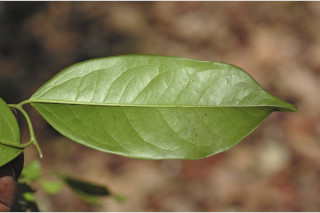
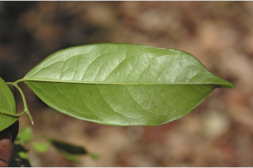

Trees up to 30 m tall.
30 ಮೀ ಎತ್ತರದವರೆಗೆ ಬೆಳೆಯುವ ಸಣ್ಣ ಗಾತ್ರದ ಮರಗಳು.
30 മീറ്റര് വരെ ഉയരത്തില് വളരുന്ന മരങ്ങള്.
மரம் 30 மீ. உயரம் வரை வளரக்கூடியது.
Bark black, flaky; blaze pale dull orange to dark orange, particularly towards inside.
ತೊಗಟೆ ಕಪ್ಪು ಬಣ್ಣದಲ್ಲಿದ್ದು ಚಕ್ಕೆ ರೂಪದಲ್ಲಿರುತ್ತವೆ; ಕಚ್ಚು ಮಾಡಿದ ಜಾಗ ಮಂದ ಕಿತ್ತಳೆ ಬಣ್ಣಹೊಂದಿದ್ದು ವಿಶಿಷ್ಟವಾಗಿ ತೊಗಟೆಯ ಒಳಬಾಗದಲ್ಲಿ ಕಡು ಕಿತ್ತಳೆ ವರೆಗಿನ ಬಣ್ಣದಲ್ಲಿರುತ್ತದೆ.
പൊളിഞ്ഞിളകുന്ന, കറുത്ത നിറത്തിലുളള പുറംതൊലി; വെട്ട്പാടിന് വിളറിയ ഓറഞ്ച് നിറം മുതല് കടും ഓറഞ്ച് നിറം വരെയാണ് പ്രത്യേകിച്ച് ഉള്ഭാഗത്ത്.
கருப்புநிற பட்டை, வெடிப்புகளுடையது, பட்டையின் உட்புறம் வெளிறிய ஆரஞ்சு முதல் அடர்ந்த ஆரஞ்சு நிறம் கொண்டது.
Branchlets terete, glabrous.
ಕಿರುಕೊಂಬೆಗಳು ದುಂಡಾಗಿದ್ದು ರೋಮರಹಿತವಾಗಿರುತ್ತವೆ.
ഉപശാഖകള് ഉരുണ്ടതും, അരോമിലവുമാണ്.
சிறிய நுனிக்கிளைகள் குறுக்குவெட்டுத் தோற்றத்தில் வளையமானது, உரோமங்களற்றது.
Leaves simple, alternate, distichous; petiole to 1 cm long, flat above, glabrous; lamina 7-15.2 x 2.5-6 cm, narrow oblong to oblong-elliptic, apex acuminate with blunt tip, base rounded, margin entire coriaceous to subcoriaceous; midrib slightly impressed above; secondary_nerves 4-7 pairs, ascending, lower most 2 pairs of nerves oblique and close; tertiary_nerves reticulate or weakly percurrent.
ಎಲೆಗಳು ಸರಳವಾಗಿದ್ದು ಪರ್ಯಾಯ ಹಾಗೂ ಸುತ್ತು ಜೋಡನಾ ವ್ಯವಸ್ಥೆ ಯಲ್ಲಿದ್ದು ಕಾಂಡದ ಎರಡೂ ಕಡೆಯ ಎದುರು ಬದರಿನ ಸಾಲಿನಲ್ಲಿರುತ್ತವೆ; ಎಲೆ ತೊಟ್ಟುಗಳು 1ಸೆಂ.ಮೀಉದ್ದವಿದ್ದು, ರೋಮರಹಿತವಾಗಿದ್ದು ಪತ್ರದ ಮೇಲ್ಭಾಗದಲ್ಲಿ ಚಪ್ಪಟೆಯಾಗಿರುತ್ತವೆ. ಪತ್ರಗಳು 7-15.2 X 2.5 – 6 ಸೆಂ.ಮೀ. ಗಾತ್ರ ಹೊಂದಿದ್ದು ಸಂಕುಚಿತ ಚತುರಸ್ರದಿಂದ ಅಂಡವೃತ್ತಾಕಾರದಲ್ಲಿದ್ದು ಮೊಂಡು ಅಗ್ರವುಳ್ಳ ಕ್ರಮೇಣ ಚೂಪಾಗುವ ತುದಿ, ದುಂಡಾದ ಬುಡ, ನಯವಾದ ಅಂಚು ಹಾಗೂ ತೊಗಲು ಅಥವಾ ಉಪ-ತೊಗಲನ್ನೋಲುವ ಮೇಲ್ಮೈ ಹೊಂದಿರುತ್ತವೆ; ಮಧ್ಯನಾಳಗಳು ಪತ್ರದ ಮೇಲ್ಭಾಗದಲ್ಲಿ ಕೊಂಚ ಅಚ್ಚೊತ್ತಿದಂತಿರುತ್ತವೆ;ಎರಡನೇ ದರ್ಜೆಯ ನಾಳಗಳು 4 ರಿಂದ 7ಜೋಡಿಗಳಿದ್ದು, ಆರೋಹಣ ಮಾದರಿಯಲ್ಲಿರುತ್ತವೆ, ತೀರಾ ತಳಗಿನ 2 ಜೋಡಿಗಳು ಓರೆಯಾಗಿದ್ದು ಸನಿಹವಾಗಿರುತ್ತವೆ.ಮೂರನೇ ದರ್ಜೆಯ ನಾಳಗಳು ಜಾಲಬಂಧನಾಳ ವಿನ್ಯಾಸದಲ್ಲಿರುತ್ತವೆ ಅಥವಾ ದುರ್ಬಲವಾಗಿ ಎಲೆದಿಂಡಿಗೆ ಅಡ್ಡವಾಗಿ ಕೂಡುವಂತವು.
ലഘുവായ ഇലകള്, ഏകാന്തരമായി, തണ്ടിന്റെ രണ്ടുഭാഗത്തുമായടുക്കിയിരിക്കുന്നു; അരോമിലവും, മുകളില് പരന്നതുമായ, ഇലഞെട്ടിന് 1 സെ.മീ വരെ നീളം; പത്രഫലകത്തിന് 7 സെ.മീ മുതല് 15.2 സെ.മീ വരെ നീളവും 2.5 സെ.മീ മുതല് 6 സെ.മീ വരെ വീതിയും, വീതികുറഞ്ഞ ആയതാകാരം മുതല് ആയത-ദീര്ഘവൃത്താകാരം വരെയാകാം, മുനപ്പില്ലാത്ത ദീര്ഘപത്രാഗ്രം, പത്രാധാരം വൃത്താകാരത്തിലാണ്, അവിഭജിതം, ചര്മ്മിലപ്രകൃതം മുതല് ഉപചര്മ്മില പ്രകൃതം വരെയാകാം; മുഖ്യസിര മുകളില് ചെറുതായി മുദ്രിതമാണ്; ആരോഹണ ക്രമത്തിലുളള 4 മുതല് 7 വരെ ജോഡി ദ്വിതീയ ഞരമ്പുകള് കീഴറ്റത്തെ രണ്ട് ജോഡി ചരിഞ്ഞതും അടുത്തതുമാണ്; ത്രിതീയ ഞരമ്പുകള് ജാലിതമോ ലഘുവായി പെര്കറന്റാ ആണ്.
இலைகள் தனித்தவை, மாற்றுஅடுக்கமானவை, இருநெடுக்கு வரிசையிலையடுக்கம் (டைஸ்டிக்கஸ்); இலைக்காம்பு 1 செ.மீ. வரை நீளமுடையது, குறுக்குவெட்டுத் தோற்றத்தில் பிளேனோகான்வக்ஸ், உரோமங்களற்றது; இலை அலகு 7-15.2 X 2.5-6 செ.மீ., குறுகிய நீள்சதுரம் முதல் நீள்சதுரம்-நீள்வட்டம் போன்றது, அலகின் நுனி வால் போன்று நீண்டு முனை மழுங்கியது, அலகின் தளம் வட்டமானது, கோரியேசியஸ் முதல் சப்கோரியேசியஸ்; மையநரம்பு மேற்பரப்பில் அலகின் பரப்பைவிட சிறிது பள்ளமானது; இரண்டாம் நிலை நரம்புகள் 4-7 ஜோடிகள், தளப்பகுதியில் உள்ள இரண்டு ஜோடி நரம்புகள் வளைவானது மற்றும் நெருக்கமானது; மூன்றாம் நிலை நரம்புகள் வலைப்பின்னல் கொண்டது அல்லது சிறிதளவு பெர்க்கரண்ட்
Flowers dioecious; male flowers white, in axillary clusters or in short cymes, tubular; female flowers solitary, sessile.
ಗಂಡು ಮತ್ತು ಹೆಣ್ಣು ಹೂಗಳು ಪ್ರತ್ಯೇಕ ಸಸ್ಯಗಳಲ್ಲಿರುತ್ತವೆ; ಗಂಡು ಹೂಗಳು ಬಿಳಿ ಬಣ್ಣದಲ್ಲಿದ್ದು,ಕೊಳವೆಯಾಕಾರದವುಗಳಾಗಿದ್ದು, ಅಕ್ಷಾಕಂಕುಳಿನಲ್ಲಿನ ಗುಚ್ಛದಲ್ಲಿ ಅಥವಾ ಕಿರಿದಾದ ಮಧ್ಯಾರಂಭಿ ಪುಷ್ಪಮಂಜರಿಯಲ್ಲಿರುತ್ತವೆ; ಹೆಣ್ಣು ಹೂಗಳು ತೊಟ್ಟುರಹಿತವಾಗಿದ್ದು ಒಂಟಿಯಾಗಿರುತ್ತವೆ,
പൂക്കള് ഡയീഷ്യസ് ആണ്; വെളുത്തതും കുഴലുപോലുളളതുമായ ആണ്പൂക്കള്, കക്ഷീയ കൂട്ടങ്ങളായോ ചെറുസൈമുകളായോ ഉണ്ടാകുന്നു; പെണ്പൂക്കള് ഒറ്റക്ക്, അവൃന്തമായുണ്ടാകുന്നു.
ஓர்பால் மலர்கள்; ஆண்மலர்கள் வெண்மை நிறமுடையது, கொத்தாக இலைக்கோணங்களில் காணப்படும் அல்லது குட்டையான சைம், குழாய் போன்றது; பெண்மலர்கள் தனித்தவை, மற்றும் பூக்காம்பற்றது.
Berry, globose; fruiting_calyx inner rim raised; lobes reflexed; seeds 6.
ಬೆರ್ರಿಗಳು ಗೋಳಾಕಾರದಲ್ಲಿರುತ್ತವೆ; ಪುಷ್ಪಪಾತ್ರೆಯ ಸುತ್ತುಕಟ್ಟು ಉಬ್ಬಿರುತ್ತದೆ; ದಳಗಳು ಹಿಂಬಾಗಿರುತ್ತವೆ; ಬೀಜಗಳು 6.
6 വിത്തുകള് വീതമുള്ള കായ, ഗോളാകാര ബെറിയാണ്; ബാഹ്യദളത്തിന്റെ അകവക്ക് ഉയര്ന്നതാണ്; കര്ണ്ണങ്ങള് പിന്നാക്കം വളഞ്ഞതാണ്. 900 മീറ്റര് വരെ താഴ്ന്ന ഉയരമുളളയിടങ്ങളിലെ ആര്ദ്ര നിത്യഹരിത വനങ്ങളില് മേലാപ്പ് മരങ്ങളായി വളരുന്നു.
முழுச்சதைகனி (பெர்ரி), உருண்டையானது; நிரந்தரமான புல்லி இதழ்கள் வளைந்தது; 6 விதைகள் கொண்டது.


 
